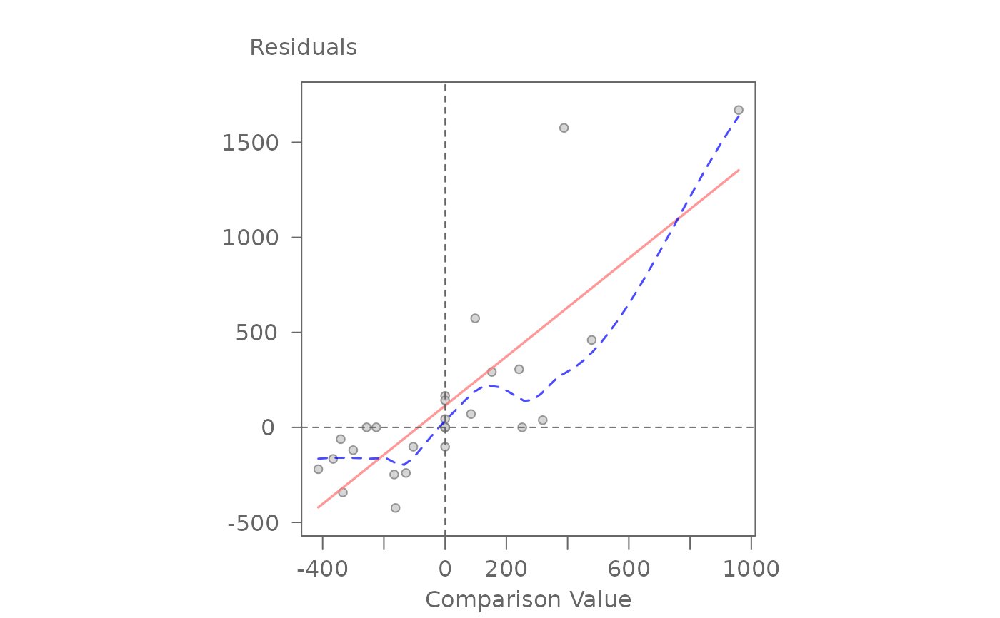
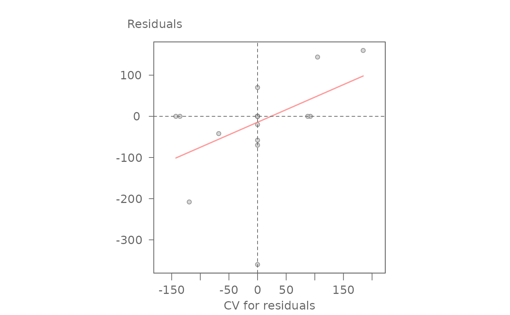
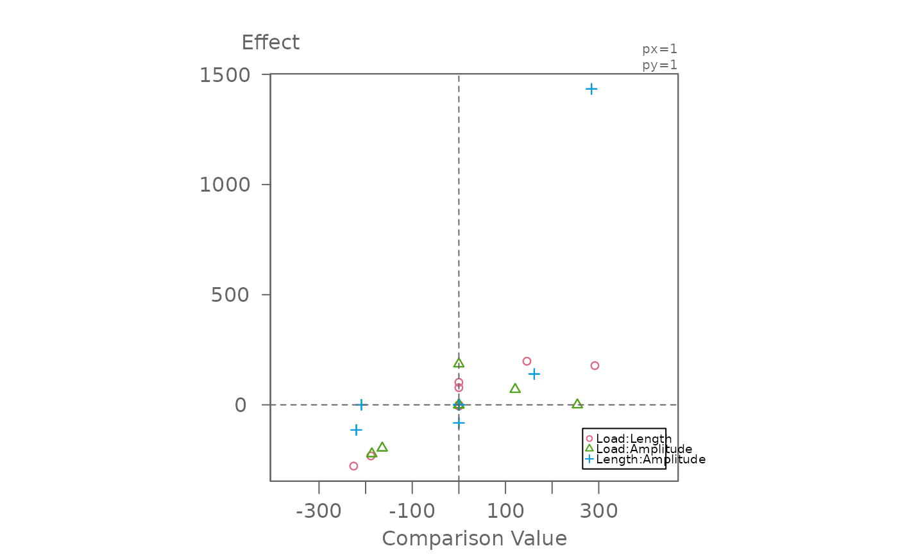

Generates either a variability decomposition plot of factor
effects or a diagnostic plot for an object of class eda_npol.
Usage
# S3 method for class 'eda_npol'
plot(
x,
plot = "effects",
reg = TRUE,
margin = "residuals",
legend = TRUE,
legend.pos = "bottomright",
legend.inset = 0.03,
...
)Arguments
- x
An object of class
eda_npol.- plot
A character string specifying the type of plot to generate.
"effects"(default)Generates a variability decomposition plot showing residuals and factor effects.
"diagnostic"Generates a diagnostic plot. Its behavior is controlled by the
marginargument.
- reg
Logical. If
TRUE, fits a linear regression line to the diagnostic plot. Only used whenplot = "diagnostic". This is disabled whenmargin = "all". Defaults toFALSE.- margin
Character string. Only used when
plot = "diagnostic". Specifies which diagnostic plot to generate. Can be the name of a two-way interaction (e.g.,"Load:Length"),"residuals"(the default), or"all"to overlay all two-way interaction diagnostics.- legend
Logical. If
TRUE, legend is added to plot whenmargin = "all".- legend.pos
The position of the legend when
margin = "all". Can be"bottomright","bottom","bottomleft","left","topleft","top","topright","right"and"center". Defaults to"topright".- legend.inset
The amount of inset for the legend from the plot border when
margin = "all". Defaults to0.03.- ...
Additional arguments passed to internal plotting functions.
Details
This method generates two types of plots for eda_npol objects:
1. Variability Decomposition Plot (plot = "effects")
Visualizes residuals and the spread of all fitted effects.
Calls .eda_plot_vardecomp.
2. Diagnostic Plot (plot = "diagnostic")
When used with an object from eda_npol, this plot's behavior is
controlled by the margin argument.
Calls .eda_plot_xy.
margin = "residuals": Plots final residuals against their n-way comparison values to diagnose higher-order non-additivity.margin = "FactorA:FactorB": Plots the fitted two-way interaction effects against their specific comparison values.margin = "all": Overlays the diagnostic plots for all two-way interactions onto a single graph, with each interaction represented by a different color and symbol.
For a main-effect only model, this generates a single diagnostic plot of residuals versus a composite comparison value.
Examples
# Main effect median polish (i.e. no interaction)
M1 <- eda_npol(yarn, Cycles, Load, Length, Amplitude)
plot(M1) # Plot effect values and residuals
 plot(M1, plot = "diagnostic") # Plot residuals vs comparison value
plot(M1, plot = "diagnostic") # Plot residuals vs comparison value

#> int Comparison Value^1
#> 114.231269 1.292551
# Full effect median polish (i.e. include two-way interactions)
M2 <- eda_npol(yarn, Cycles, Load, Length, Amplitude, max_order = 2)
plot(M2, plot = "diagnostic") # Plot residuals vs higher-order CV

#> int CV for residuals^1
#> -14.3106101 0.6090007
# Overlay all two-way interaction diagnostics
plot(M2, plot = "diagnostic", margin = "all")
#> For 'margin = "all"', regression lines are disabled to avoid confusion.

# Generate the diagnostic plot for a specific two-way interaction
plot(M2, plot = "diagnostic", margin = "Load:Length", reg = TRUE)
 #> int CV for Load:Length^1
#> 1.9248763 0.9706704
# Generate side-by-side diagnostic plots for all two-way interactions
numplots <- length(M2$cv) - 1
nameplots <- names(M2$cv)[-(numplots+1)]
nc <- ceiling(sqrt(numplots)) # number of columns
nr <- ceiling(numplots / nc) # number of row
OP <- par(mfrow=c(nr,nc))
invisible(sapply(nameplots, \(x) plot(M2, plot="diagnostic", margin = x, reg=TRUE)))
#> int CV for Load:Length^1
#> 1.9248763 0.9706704
#> int CV for Load:Amplitude^1
#> -19.5494337 0.5854442
#> int CV for Length:Amplitude^1
#> 148.786019 2.275077
par(OP)
#> int CV for Load:Length^1
#> 1.9248763 0.9706704
# Generate side-by-side diagnostic plots for all two-way interactions
numplots <- length(M2$cv) - 1
nameplots <- names(M2$cv)[-(numplots+1)]
nc <- ceiling(sqrt(numplots)) # number of columns
nr <- ceiling(numplots / nc) # number of row
OP <- par(mfrow=c(nr,nc))
invisible(sapply(nameplots, \(x) plot(M2, plot="diagnostic", margin = x, reg=TRUE)))
#> int CV for Load:Length^1
#> 1.9248763 0.9706704
#> int CV for Load:Amplitude^1
#> -19.5494337 0.5854442
#> int CV for Length:Amplitude^1
#> 148.786019 2.275077
par(OP)